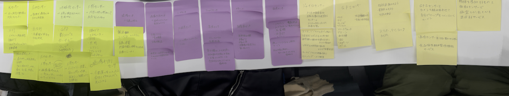

デザイン演習Ⅲ・Ⅳ 第3回
データを集めることで何ができるか？
私たちのグループでは、人感センサーによって睡眠時の心拍数などの記録や、温度センサーや振動センサーを使った食器保存管理機能サービスなどの意見があがりました。
＜グループで出た意見＞
自分で考えたアイデア＜紫外線センサーで日焼け対策＞
紫外線の量は目に見えなくて分からづらいという悩みがあると考えました。また、紫外線量が少なそうな冬でも意外と紫外線があるため日焼け対策をするのは大変です。
そんな時に、紫外線センサーを家の屋根などに取り付け、連動したスマホから通知が来るようにして日焼けの対策をすることができるサービスがあれば便利なのではないかと考えました。